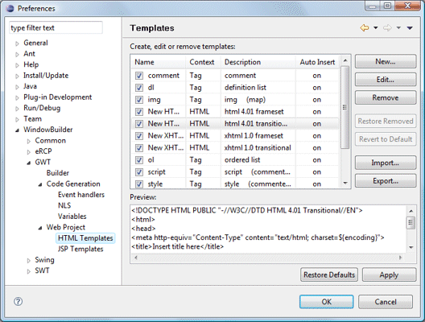

Preferences - HTML Templates This page is used to control various HTML Template options. Create, edit or remove templatesThis preference controls the list of known HTML templates. Templates may be added, edited or removed. The entire list may also be imported and exported. |